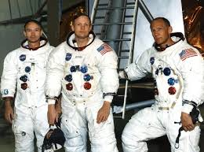

Neil Armstrong was a naval aviator, test pilot, and astronaut who became the first human to walk on the Moon. Before Apollo 11, he flew on Gemini 8, where he successfully handled a dangerous spacecraft emergency that demonstrated his exceptional piloting skills.
On July 20, 1969, Armstrong guided the Lunar Module Eagle to a safe landing in the Sea of Tranquility. Hours later, he became the first person to step onto another world. His famous words, "That's one small step for man, one giant leap for mankind," became one of the most quoted phrases in history.
Armstrong remained a symbol of exploration, humility, and achievement throughout his life.
Michael Collins served as the Command Module Pilot during Apollo 11. While Armstrong and Aldrin explored the Moon, Collins remained alone in lunar orbit aboard Columbia. His responsibilities included maintaining the spacecraft and ensuring a successful rendezvous after the lunar landing.
Before Apollo 11, Collins flew on Gemini 10 and completed two spacewalks. Although he never walked on the Moon, many historians consider his role equally vital to the mission's success. Collins later became a respected author and advocate for space exploration.
Buzz Aldrin was a fighter pilot, engineer, and astronaut who became the second person to walk on the Moon. Prior to Apollo 11, he flew on Gemini 12, where he helped develop effective techniques for working outside spacecraft during spacewalks.
During Apollo 11, Aldrin spent more than two hours exploring the lunar surface alongside Armstrong. His engineering expertise contributed significantly to mission planning and operations. After leaving NASA, Aldrin became one of the world's most recognizable advocates for future human exploration of space.